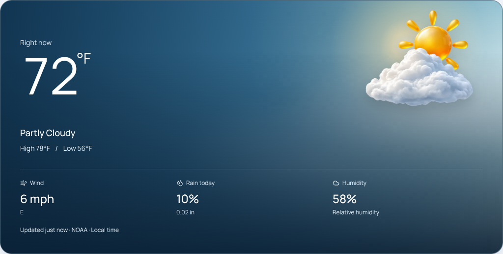
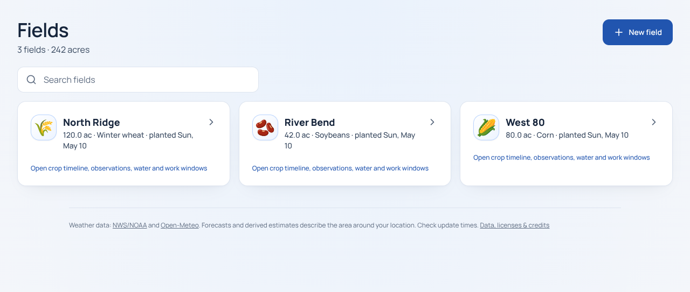

Open it. Check the forecast.
See local weather and radar without creating an account. Use your location or look up a ZIP code.
- Current conditions and hourly outlook
- Precipitation radar
- Area growing conditions
A clearer day ahead
The forecast you came for. Useful context for the ground you care about.
Built for corn, soybeans and wheat.
Room for your other crops, too.

What matters today · West 80
Crop demand outpaces expected rain
Planning estimate · Open the evidenceIllustrative app screens and demo data
Weather you can find quicklyLocal conditions & radar
A little more field contextCrop & season tracking
Your own observationsRain, soil & growth stages
One place to get your bearings
Keep everyday weather simple. Connect it with your fields when there’s a little more to consider.
Current conditions, an hourly forecast and precipitation radar. Check what’s happening around your location, without setting up a field or account.
Illustrative demo data · Select a feature to explore

Example fields · Not real customer data
Built around your ground
Draw a field boundary, choose a commodity and keep its season in context. Corn, soybeans, winter wheat and spring wheat share the same simple workflow.
Growing oats or sunflowers? Save your own commodity name. Custom crops stay clearly separated from supported crop-specific estimates.
Bring what you know
Weather models describe the area. Your field readings add local context. Record rainfall, irrigation, soil temperature, moisture readings and confirmed crop stages by field and harvest year.
Help us shape the field experience0.35 in
Measured totals replace modeled rain for the dates you record—even when the measured total is zero.
Illustrative readingAn easy place to begin
See local weather and radar without creating an account. Use your location or look up a ZIP code.
Save fields and seasons, add your observations and review the evidence behind field-specific planning insights.
AcreOutlook is in beta development. Paid-plan details will be shared before subscriptions are introduced.
The grower beta
We’re inviting corn, soybean and wheat growers to try AcreOutlook, tell us what’s confusing, and show us what deserves a place in their day.
A short first conversationTell us how you use weather today.
Try it on your own phoneWalk through a few everyday tasks.
Tell us what mattersA couple of follow-ups help guide what comes next.
Request an invitation by email. Access and onboarding details will be confirmed directly.
Request beta accessOr write to support@acreoutlook.com
Open AcreOutlookAcreOutlook is a browser-first app designed for phones and larger screens. Compatible phones can add the app to their home screen. Beta onboarding will include the app address and installation steps. This public website is the product introduction.
No. The app’s local weather and radar are public. An account is needed to save fields, crop seasons and observations, and to use the personal field workspace.
The field workflow includes corn, soybeans, winter wheat and spring wheat. You can also save custom commodity names. Crop-specific models are not automatically applied to custom crops, and observed stages are kept distinct from estimates.
No. Weather windows are planning aids based on forecast filters. Check actual wind, inversions, equipment, nearby conditions and the product label before an application. The app does not approve chemical applications or diagnose crop disease.
Use “Request beta access” to prepare an email to the AcreOutlook team. Nothing is submitted until you send that email. Participation details and any future paid-plan pricing will be explained before you commit.